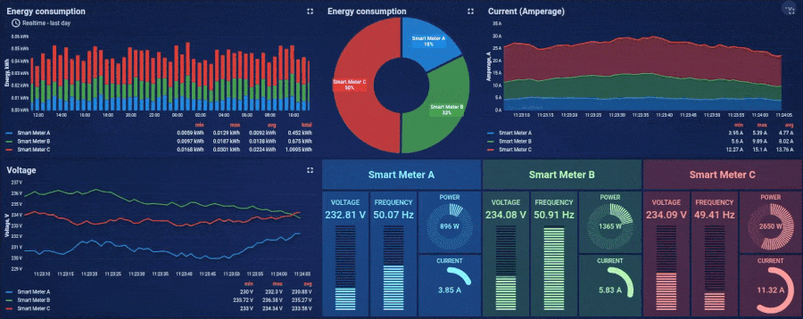
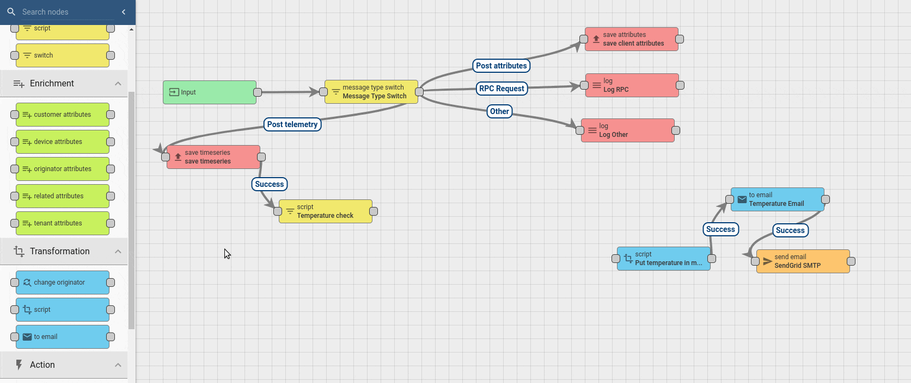
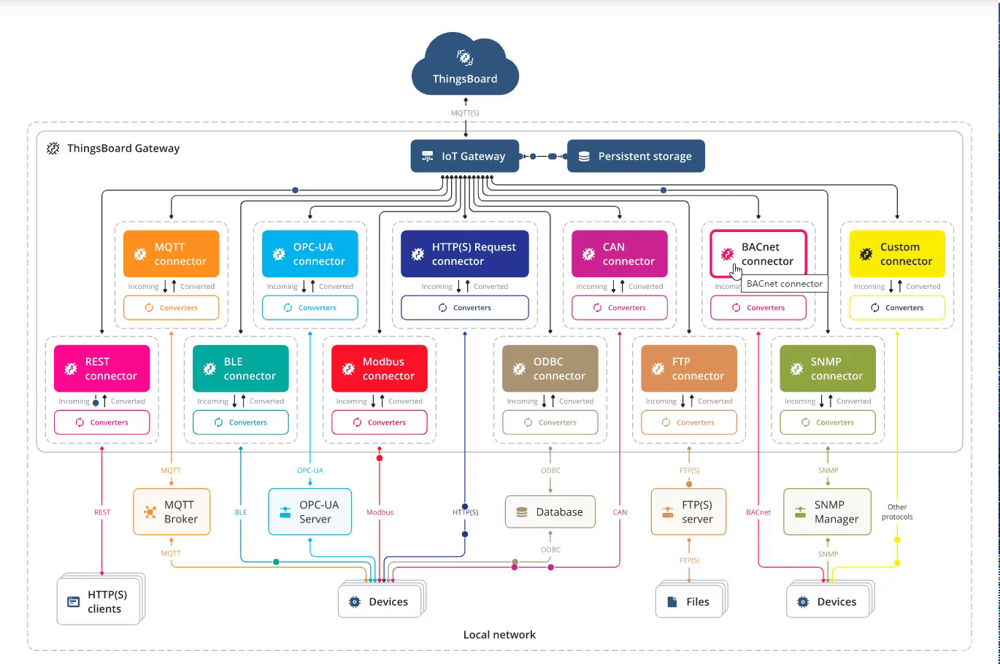
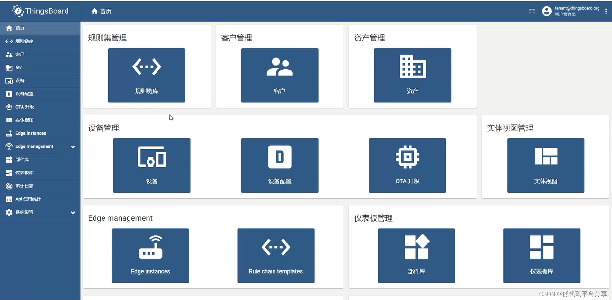
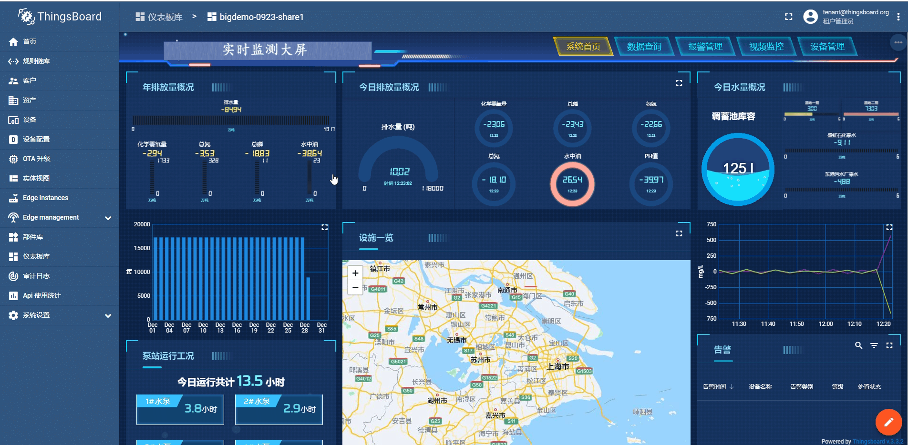

简介
概述
ThingsBoard(简称TB)物联网平台是
面向中小型企业开箱即用的低代码物联网平台，提供N+1+N（N个终端产品+1个物联网平台+N个行业方案）的产品服务矩阵，帮助企业快速搭建稳定可靠的物联网系统，节省时间及人力成本。
ThingsBoard IoT Gateway 集成，应对遗留设备/系统
ThingsBoard Edge 代理，分散负载提高安全性，可以做 设备联动 和 中控展示
IoT平台流程图
如图所示，这就是TB平台物联网大概的一个流程

为什么选thingsboard这个平台
ThingsBoard 基础，六边形战士
有汉化包，基本完整
可视化仪表盘，基于栅格系统
规则引擎，满足你的一切想象
一，开放源代码，社区人气活跃，版本快速更新迭代。其在github点赞数，高达1万，从2016年开源以来，基本间隔2个月就有版本更新及功能修复。
二，企业级物联网基础开发平台。支撑docker安装方式，几分钟可完成搭建，具备常用的物联网系统功能，涵盖数据收集、处理、可视化和设备管理等，能帮助你快速建立物联网相关业务系统。
三，统一设备接入。其自带网关，提供丰富的的设备接入协议，用于数据收集，包括MQTT、HTTP、OPC等。
最后，应用可视化搭建。允许用户自定义仪表板进行数据可视化展示；规则引擎通过积木编程方式实现数据分析与处理。可以定义设备事件或数据的过滤、告警条件设置等业务逻辑，只需要编写简单Js脚本。
你有没有想过自己动手做一个物联网产品需要做哪些工作？要想成功的搭建一套，最起码要会硬件开发、云平台搭建、最后就是控制端的开发，这起码也要一年半载 。




